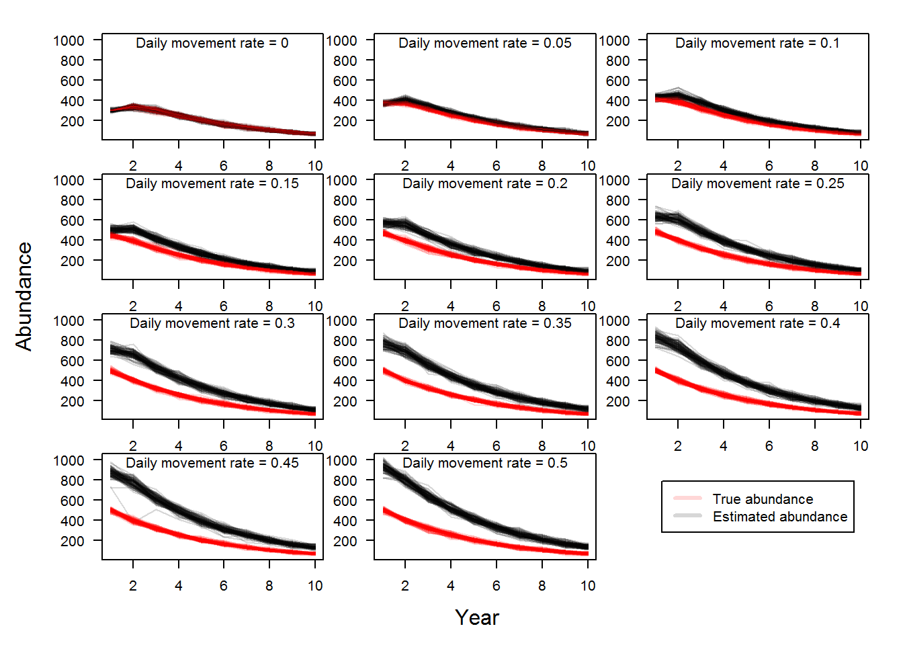
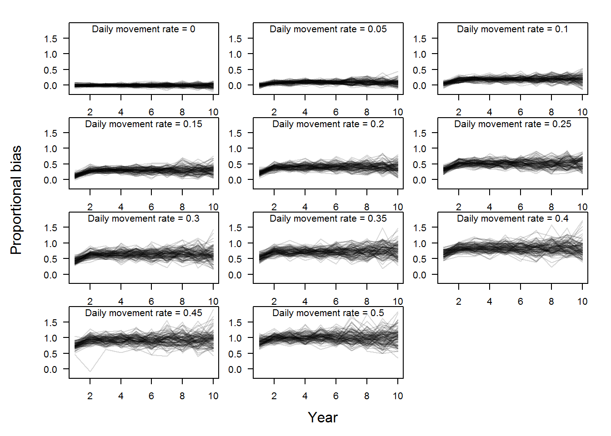

In a previous post we looked at the effect of violating the assumption of closure, where Pallid Sturgeon can move in and out of a bend on a daily basis. The analysis showed that as daily movement rates increased there was a positive bias.
Recall that the fundamental objectives of the PSPAP were to:
Through the workshop we identified many pathways to achieve these fundamental objectives. For example, using the same CPUE based monitoring design can achieve fundamental objective XX but it does a poor job achieving some of the remaining objectives. Specifically, abundance estimates from catch effort data are likely negatively biased, providing little utility in meeting fundamental objective XX.
One of the monitoring design alternatives proposed during the meeting was a capture mark capture (CMR) program that uses a robust design to simultaneously estimate several demographic parameters like survival, abundance, and movement. The estimation is possible because of the use of primary occasions with repeated secondary occasions nested within primary occasions.
Illustration of a robust design capture recapture program with multiple primary occasions and secondary occasions with each primary occasion. The period between primary occasions is treated as an open population so pallid sturgeon are subject to survival and move in the system. The secondary occasions are assumed to be closed to movement and survival and therefore capture probability and abundance can be estimated.

The parameters estimated include:
Illustration of movement between primary occasion 1 (t: left circle) and primary occasion 2 (t+1; right circle). The arrows represent the possible combinations of transitioning from observable and unobservable at t to observable and unobservable at t+1.

In the
The robust design is not new to Pallid Sturgeon in the Misso
WS14 SPP12
Relevant assumptions for the secondary periods (i.e., periods of where closure is assumed):
We also assume:
The objectives of this analysis were to evaluate the effect of daily movement on estimates of survival, abundance, and capture probability. Introduce proxies for evaluating meeting objectives.
Not surprisingly, as daily movement rate increased, estimated bend-level abundance increased. This was a similar result to the analysis of the M0 model. The figure below illustrates the effect of daily movement on bend-level abundance estimates over time. The red lines are 100 replicates of true population dynamics and the black lines are the estimated dynamics. As daily movement rate increases the gap between the black and red lines increases illustrating the positive bias.

Bias is one way we can put a value on a monitoring design that links to a fundamental objective. In this case, the fundamental objective provided during the workshop was XXXXXXXXXXXXXX. In order to evaluate how alternative monitoring designs achieve the fundamental objectives we need to develop a way to quantify this fundamental objective. In terms of estimating abundance there are 2 measures of an estimator that are useful, bias and precision. In the figure above, we can calculate the bias of each yearly estimate for each rep where bias is the estimated abundance minus the true abundance. Fortunately this is simulated data so we know what the true abundance is! Bias can then be viewed as bias with fish as the units, for example the estimate overestimated true abundance by 200 Pallid Sturgeon or bias can be scaled proportionally. Proportional bias allows and apples to apples comparison of the abundance estimates as a percentage. For example, a bias of 50 pallid sturgeon if the true abundance was 80 is different than if the true abundance was 5000.
Proportional bias is illustrated in the figure below where proportional bias was calculated for the plot above.

Using the proportional bias values illustrated above we can get the average bias for each replicate, thus characterizing bias over the 10 year monitoring period. Using the mean proportional bias values we can visualize the effect of increasing daily movement rates on bend-level abundance estimates.